6.1 Leçon
6.1.1 Télécharger les données
Importez l’ensemble des données utilisées dans ce module.
Sauvegardez le dossier compressé (Module6_donnees.zip) dans votre répertoire de travail pour ce module, et dézippez-le.
Ce dossier comprend lui-même cinq sous-dossiers que vous devez également dézipper:
COVIDElevationPopulationRoutesVilles
Nous utiliserons ces données à partir de la section 6.1.3. Commençons d’abord par une introduction sur les principes de bases de la cartographie.
6.1.3 Cartes statiques avec tmap
Il existe plusieurs bibliothèques R permettant de visualiser des données spatiales. La bibliothèque mapview, que nous avons déjà utilisée, en est un exemple. La bibliothèque ggplot2, que vous connaissez peut-être, permet de créer des cartes qui peuvent être peaufinées par l’utilisation de fonctions des bibliothèques sf et ggspatial37. Dans le cadre de ce cours, nous nous concentrerons sur la bibliothèque tmap et l’apprentissage de ses fonctions principales.
Nous avons choisi tmap parce que cette bibliothèque est relativement simple à utiliser et que ses fonctions sont intuitives. Le fonctionnement de tmap est très similaire à celui de la bibliothèque ggplot2 qui est fort populaire pour la visualisation de données de toutes sortes. Si vous connaissez déjà ggplot2, alors l’apprentissage de tmap vous sera familié. Si vous ne connaissez pas ggplot2, vous pourriez être amenés à l’utiliser dans le futur, et dans ce cas votre connaissance de tmap vous sera utile.
De façon générale, nous utilisons tmap pour cartographier des données spatiales de la façon suivante:
tm_shape(DonneesSpatiales) + tm_fonction1() + tm_fonction2() + ...La fonction tm_shape() est suivi d’une ou de plusieurs fonctions qui précisent les objets ou les attributs des données à cartographier ainsi que les éléments cartographiques à ajouter et la mise en page souhaitée.
Télécharger la bibliothèque tmap:
install.packages("tmap")Chargez tmap dans votre session de travail R ainsi que les bibliothèques sf et raster dont nous aurons besoin pour lire et manipuler les données vectorielles et matricielles respectivement:
library(tmap)
library(sf)
library(raster)6.1.4 Les polygones
Données sur les régions administratives du Québec
Pour débuter notre exploration des fonctions de cartographie offertes avec tmap nous utiliserons les données vectorielles sur les limites des régions administratives du Québec ainsi que la taille de leur population. La taille des populations des régions administratives provient de la Banque de données des statistiques officielles sur le Québec (https://bdso.gouv.qc.ca/), et les limites géographiques des régions proviennent du site Données Québec (https://www.donneesquebec.ca/recherche/dataset/decoupages-administratifs).
Utiliser la fonction st_read() de la bibliothèque sf pour lire le shapefile QC_RegAdm_Pop.shp contenu dans le dossier Population:
Q <- st_read("Module6/Module6_donnees/Population/QC_RegAdm_Pop.shp")Reading layer `QC_RegAdm_Pop' from data source
`E:\ELF\Dropbox\Teluq\Enseignement\Cours\SCI1031\Developpement\Structure_test\sci1031\Module6\Module6_donnees\Population\QC_RegAdm_Pop.shp'
using driver `ESRI Shapefile'
Simple feature collection with 17 features and 8 fields
Geometry type: MULTIPOLYGON
Dimension: XY
Bounding box: xmin: -830300 ymin: 118000 xmax: 783300 ymax: 2091000
Projected CRS: NAD83 / Quebec LambertObserver la structure et les attributs du shapefile Q. Celui-ci contient 17 multipolygones, un pour chacune des régions administratives du territoire québécois. De plus, Q contient 8 attributs:
NUM_REG: le numéro associé à la région administrative,NOM_REG: le nom de la région administrative,AREA_REG: la superficie de la région,Pop_tot: la population totale en 2019 dans la région,Pop_0_14: la population agée de 0 à 14 ans,Pop_15_24: la population agée de 15 à 24 ans,Pop_25_64: la population agée de 25 à 64 ans,Pop_65_: la population agée de 65 ans et plus.
Intérieur des polygones
Fonction tm_fill
Créons tout d’abord une carte simple du shapefile Q que nous venons de charger. La fonction tm_fill() permet de remplir de façon homogène l’intérieur des limites d’un polygone. Elle s’applique donc aux données vectorielles de type polygone, et on l’ajoute à la donction tm_shape().
tm_shape(Q)+
tm_fill()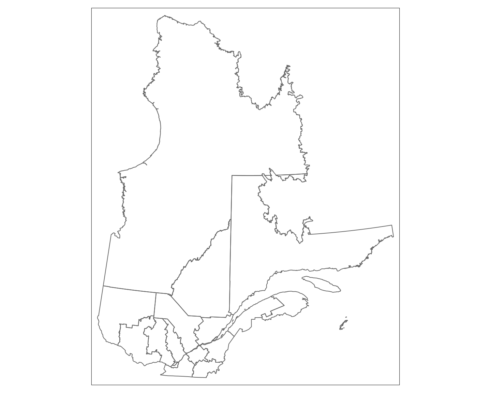
Objet tmap
La bibliothèque tmap comprend sa propre classe d’objets:
map_Q <- tm_shape(Q)+
tm_fill()
class(map_Q)[1] "tmap"
En créant un objet tmap, la carte est seulement affichée lorsqu’on appelle l’objet.
La création d’objet tmap est utile car, comme nous le verrons, elle permet de constituer une carte de base à laquelle nous pouvons ajouter des éléments cartographiques.
Frontières des polygones
Fonction tm_borders()
La fonction tm_borders() permet d’illustrer les frontières des polygones:
# frontiere des regions admin
tm_shape(Q) +
tm_borders()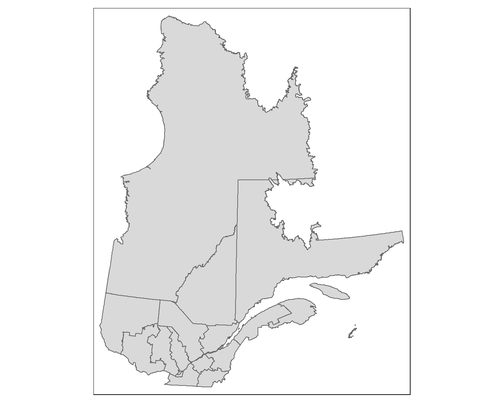
La fonction tm_borders() peut s’utiliser conjointement avec la fonction tm_fill():
# Quebec + frontiere
tm_shape(Q) +
tm_fill() +
tm_borders()
Fonction tm_polygons()
Par ailleurs, la fonction tm_polygons() est équivalente l’utilisation conjointe de tm_borders() et tm_fill():
# tm_polygons = tm_fill + tm_borders
tm_shape(Q) +
tm_polygons()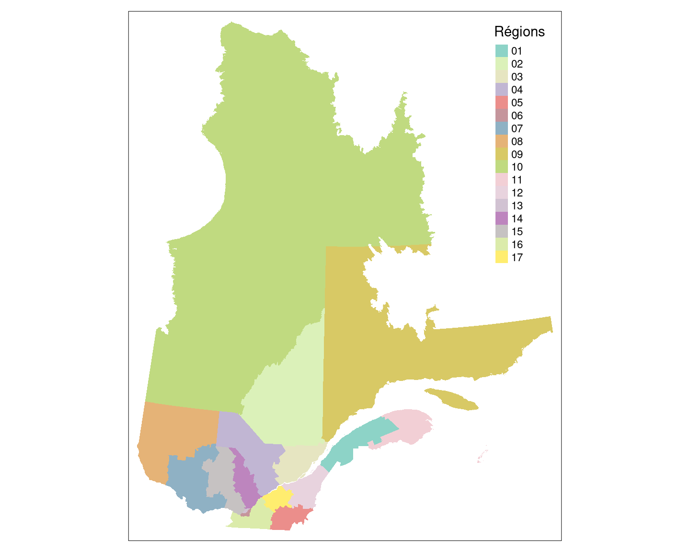
Paramètres esthétiques
Les fonctions tm_borders() et tm_fill() possèdent plusieurs arguments pour ajuster l’apparence de la carte. Voici des exemples:
# couleur des polygones
Q1 <- tm_shape(Q) + tm_fill(col="green")
# transparence
Q2 <- tm_shape(Q) + tm_fill(col="green", alpha = 0.4)
# couleur des frontières
Q3 <- tm_shape(Q) + tm_borders(col="green")
# épaisseur du trait
Q4 <- tm_shape(Q) + tm_borders(col="pink", lwd = 4)
# type de trait
Q5 <- tm_shape(Q) + tm_borders(col="blue", lty = 2)
# couleur des polygones et des frontières
Q6 <- tm_shape(Q) + tm_fill(col="blue", alpha = 0.3) +
tm_borders(col="black")
tmap_arrange(Q1,Q2,Q3,Q4,Q5,Q6)FIGURE 6.1: Cette figure est inspirée de la figure 9.3 du livre Geocomputation with R (Lovelace, Nowosad, and Muenchow 2021).
Attributs des polygones
La création de cartes, à partir de données vectorielles de type polygone, nécessite parfois de colorer individuellement les polygones.
Par exemple, la couleur d’un polygone peut représenter la valeur d’un de ses attributs. Dans ce cas, nous utilisons la fonction tm_fill() en associat à l’argument col le nom de l`attribut que nous désirons illustrer.
tm_shape(Q) + tm_fill(col="NUM_REG", title = "Régions")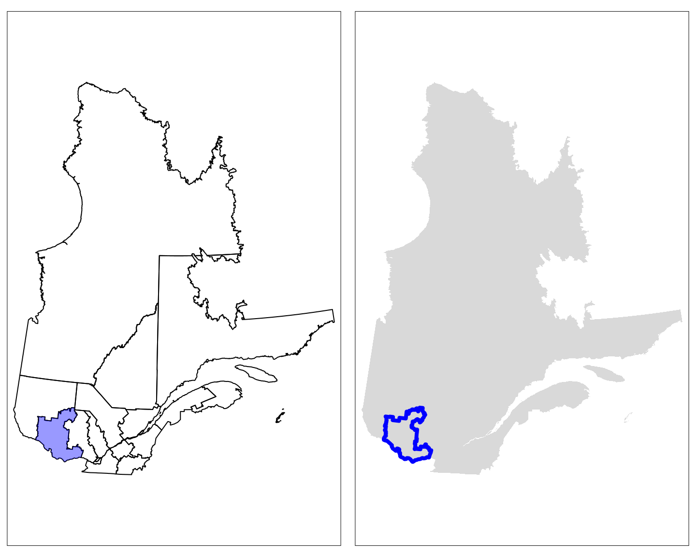
Dans le cas ci-dessus, l’attribut illustré (NUM_REG) est catégorique et distinct pour chaque polygone.
Nous pouvons aussi choisir d’illustrer un seul des polygones d’un shapefile. Dans un tel cas, nous devons isoler le polygone désiré et n’illustrer que ce dernier avec la fonction tm_shape(). Par exemple, isolons le polygone correspondant à la région de l’Outaouais:
Q_Outaouais <- Q[Q$NOM_REG == "Outaouais",]
tm_shape(Q_Outaouais) + tm_fill(col="blue", alpha = 0.4)
Nous pouvons également vouloir mettre l’emphase sur un polygone en particulier, en assignant une couleur seulement à celui-ci, tout en cartographiant l’ensemble des polygones. Dans ce cas, nous pouvons utiliser le caractère additif des objets tmap. Nous créons un premier objet représentant l’ensemble des polygones et nous lui additionnons un deuxième objet représentant le polygone que nous souhaitons mettre en évidence.
# Une option
Q1 <- tm_shape(Q) + tm_borders(col="black")
Q2 <- tm_shape(Q_Outaouais) + tm_fill(col="blue", alpha = 0.4)
Q12 <- Q1 + Q2
# Une autre option
Q3 <- tm_shape(Q) + tm_fill()
Q4 <- tm_shape(Q_Outaouais) + tm_borders(col="blue", lwd = 4)
Q34 <- Q3 + Q4
tmap_arrange(Q12,Q34)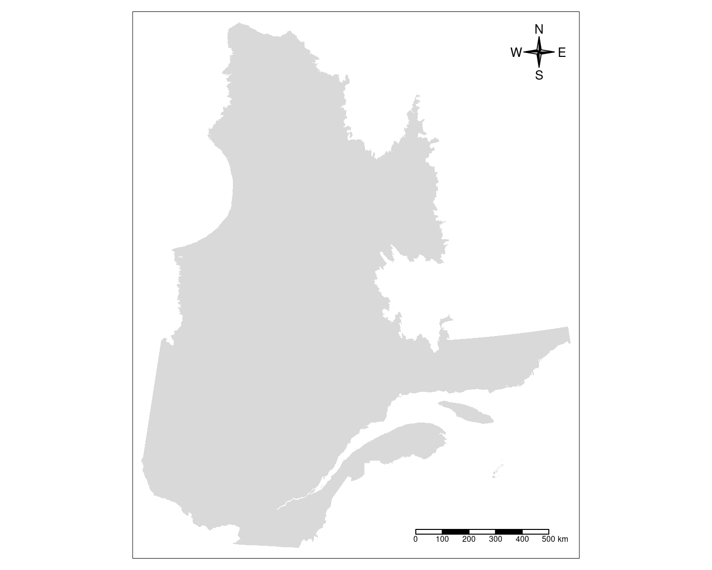
Remarquer l’usage de la fonction tmap_arrange() pour afficher des cartes côte-à-côte.
6.1.5 Spécificités cartographiques
Barre d’échelle et rose des vents
Fonctions tm_scale_bar() et tm_compass
L’ajout d’un barre d’échelle et d’une rose des vents, se fait par l’utilisation des fonctions tm_scale_bar() et tm_compass() respectivement:
map_Q + # la carte du Québec que nous avons créée plus haut
# ajout d'une barre d'échelle
tm_scale_bar(breaks = c(0,250,500),
text.size = 0.8,
position=c("right","bottom")) +
# ajout d'une rose des vents
tm_compass(type = "arrow",
position = c("right", "top"))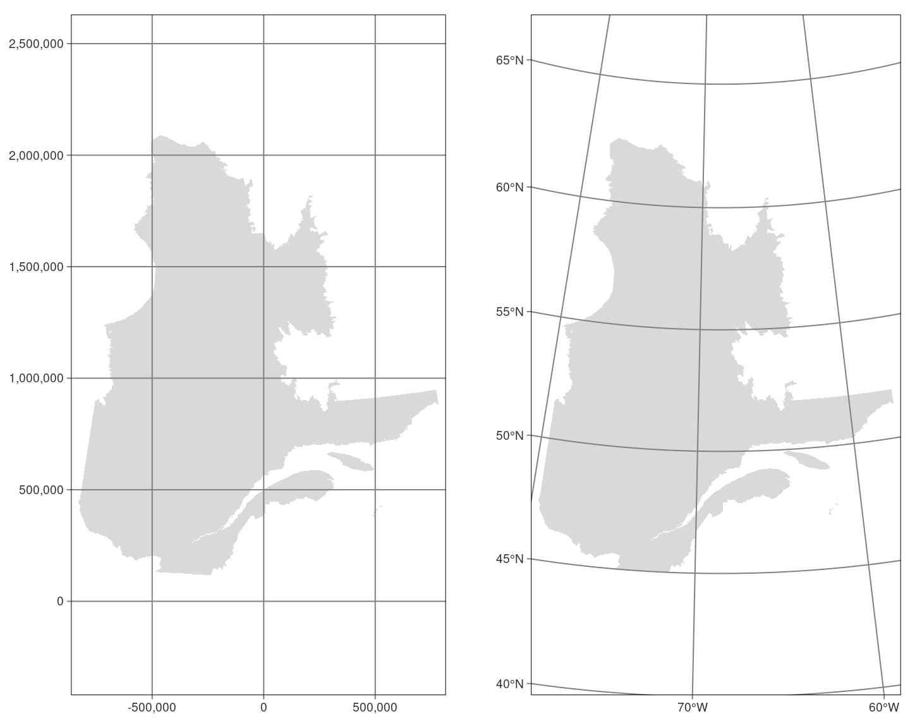
où l’argument break précise les divisions sur la barre d’échelle, text.size la taille du texte sous la barre, et position la position de la barre sur la carte (gauche ou droite, haut ou bas).
Plusieurs options d’arguments sont possibles. Utilisez help(tm_scale_bar) ou help(tm_compass) pour connaître les autres arguments possibles pour ces fonctions. Par exemple,
map_Q +
tm_scale_bar(width = 2,
position=c("right","bottom")) +
tm_compass(type = "4star",
size = 2,
show.labels = 2,
position = c("right", "top"))Scale bar width set to 0.25 of the map width
Grille et graticules
Fonctions tm_grid() et tm_borders()
La fonction tm_grid() ajoute une grille à la carte selon le système de coordonnées projetées des données. Dans le cas présent, le shapefile Q est exprimé dans le système de coordonnées projetée Conique conforme de Lambert (epsg:32198) qui est métrique.
La fonction tm_graticules ajoute les lignes de longitude et de latitude du système de coordonnées géographiques, c’est-à-dire non-projetées. Dans le cas présent, le shapefile Q est exprimé dans le système de coordonnées géographiques du Datum North Américain de 1983 (NAD83, espg:4269).
Q1 <- map_Q + tm_grid()
Q2 <- map_Q + tm_graticules()
tmap_arrange(Q1,Q2)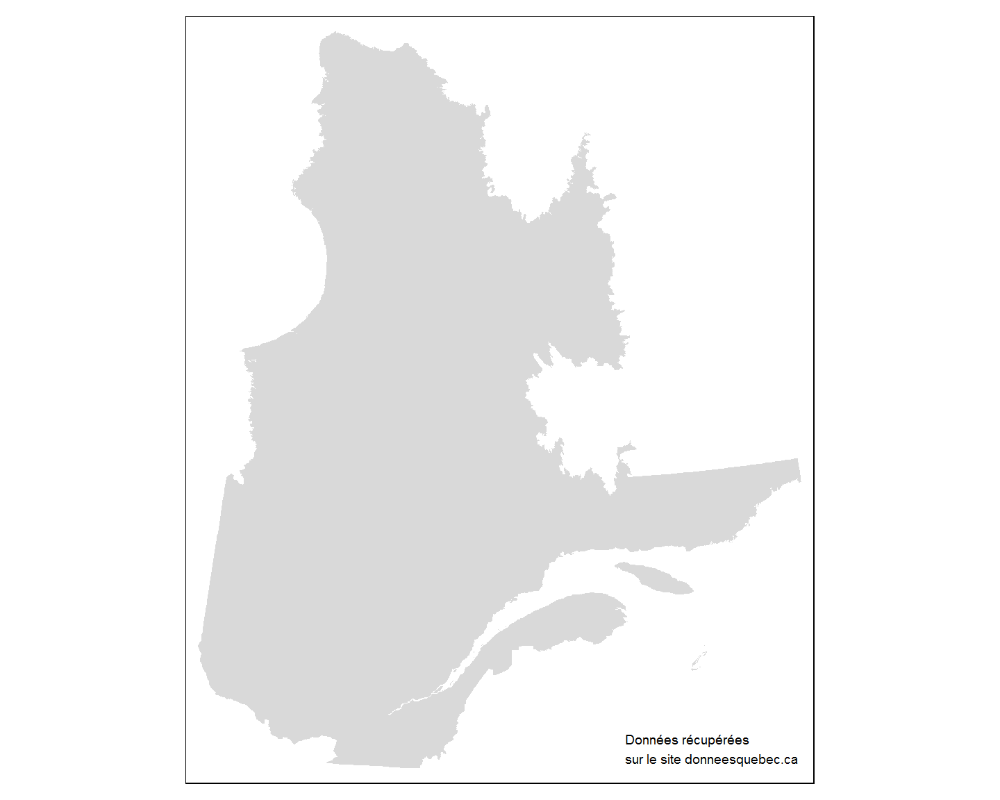
Plusieurs options d’arguments existent pour les fonctions tm_grid() et tm_graticules(). Par exemple, il est possible de préciser le nombre de divisions sur l’axe des x (n.x) et sur l’axe des y (n.y)38, l’épaisseur du trait (lwd), la couleur (col) ou encore la taille de l’écriture (labels.size).
Q1 <- map_Q + tm_grid(labels.size=0.5,
col="yellow",
lwd=3,
n.x = 10, n.y = 4)
Q2 <- map_Q + tm_graticules(labels.col = "darkblue",
alpha = 0.3,
labels.cardinal = FALSE)
tmap_arrange(Q1,Q2)
Attribuer les crédits ou la source des données
Fonction tm_credits()
Il faut utiliser la fonction tm_credits() pour ajouter à la carte une mention sur la source des données, ou toute autre information comme l’auteur ou l’autrice de la carte et son organisation d’attache. Par défaut, la mention apparaît dans le coin inférieur droit.
map_Q +
tm_credits("Données récupérées \nsur le site donneesquebec.ca",
size = 0.6)
6.1.6 Mise en page
Fonction tm_layout()
La fonction tm_layout permet d’ajuster la mise en page d’une carte et différents éléments de son esthétique. Pour découvrir l’ensemble des arguments possibles tapez la commande help(tm_layout) (ou ?tm_layout) dans votre console R. Plusieurs des arguments utiles sont présentés ci-dessous.
Titre, cadre et couleur du fond
- L’ajout d’un titre (
title), la taille de ce dernier (title.size) et sa position (title.position). - La présence ou l’absence d’un cadre (
frame) et l’épaisseur du trait de celui-ci (frame.lw). - La taille des marges extérieures au cadre:
outer.margins = c(Haut,Droit,Bas,Gauche)oùHaut,Droit,Bas,Gauchesont des chiffres entre 0 (pas de marge) et 1 (marge complète). - La couleur du fond de la carte (
bg.color) et de l’espace à l’extérieure du cadre (outer.bg.color).
Voici quelques exemples de mise en page qui utilisent ces arguments.
# Création d'une carte générale
map_Q <- tm_shape(Q) + tm_fill() + tm_borders()
# Différentes options de mise en page
map_Q + tm_layout(title = "Carte du Québec", title.size =0.8, title.position = c("right","top"))
map_Q + tm_layout(frame = FALSE)
map_Q + tm_layout(bg.color = "aquamarine", scale = 2)
map_Q + tm_layout(frame.lwd = 2, outer.margins = c(0, 0.2,0, 0.2), outer.bg.color="lavender")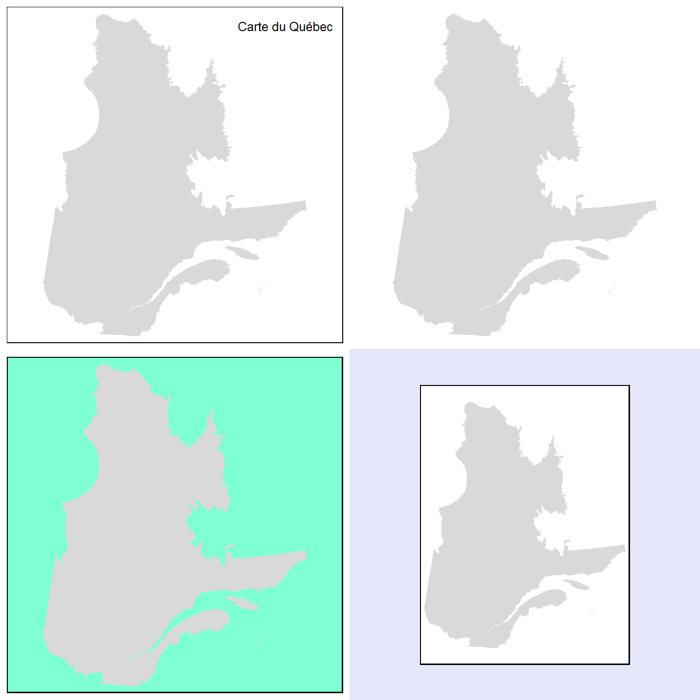
Légende
La fonction tm_layout() permet aussi de configurer l’apparence de la légende. Certains des arguments utiles sont:
- La présence, ou non, d’une légende (
legend.show). Par défaut la légende est affichée. - L’option de placer la légende à l’extérieur du cadre de la figure (
legend.outside). - La position de la légende à l’intérieur (
legend.position) ou à l’extérieur (legend.outside.position) du cadre. Par défaut,la légende est placée dans le coin où il y a le plus d’espace. - L’option de mettre un cadre autour de la légende (
legend.frame) et de définir l’épaisseur du trait (legend.frame.lwd) et la couleur de fond de la légende (legend.bg.color) - La police de caractère (
legend.title.fontfamily), la taille des caractères (legend.title.fontface), et la couleur (legend.title.color) du texte et du titre de la légende.
Voici quelques exemples de mise en page de la légende:
tm_shape(Q) +
tm_polygons(col = "NOM_REG") +
tm_layout(legend.show = FALSE)
tm_shape(Q) +
tm_polygons(col = "NUM_REG", title = "Régions administratives",
legend.is.portrait = FALSE) +
tm_layout(frame = FALSE, legend.outside = TRUE,
legend.outside.position = "bottom",
legend.outside.size = 0.15,
legend.text.size = 0.75)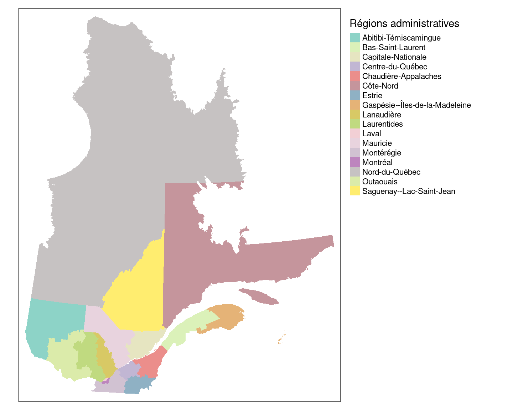
tm_shape(Q) +
tm_fill(col = "NOM_REG", title = "Régions administratives") +
tm_layout(legend.outside = TRUE)
tm_shape(Q) +
tm_fill(col="NOM_REG", title = "Régions administratives") +
tm_layout(bg.color = "black", frame = FALSE, legend.outside = TRUE,
legend.outside.position = "left",
legend.title.fontfamily = "serif",
legend.title.fontface = 2,
legend.title.color = "lightpink",
legend.text.color = "white")
Ajustement des couleurs
De plus, la fonction tm_layout permet d’ajuster les couleurs présentes dans la carte:
- L’argument
aes.colordéfini la couleur de remplissage des polygones, des frontières, du texte, etc. - L’argument
saturationdéfini le niveau de saturation des couleurs. La valeur par défaut est 1, et la valeur 0 donne une représentation en noir et blanc. Il est possible de donner des valeurs supérieures à 1 pour des couleurs très saturées. Il est aussi possible de données des valeurs négatives. - L’argument
sepia.intensityest un nombre entre 0 et 1 qui défini le niveau de “chaleur” des couleurs. Plus sa valeur est grande, plus les couleurs ont une teinte jaune voir brune. La valeur par défaut est 0. - L’argument
aes.palettepermet de changer la palette de couleurs utilisées. La librarietmaputilise les palettes de couleurs de Color Brewer. Dans le cas d’attributs catégoriques (comme le nom de régions) la palette utilisée par défaut se nommeSet3, mais il est possible de choisir d’autres palettes parmi celles-ci:Accent,Dark2,Paired,Pastel1,Pastel2,Set1, etSet2. Nous reviendrons sur le sujet des palettes un peu plus loin dans cete leçon.
Voici quelques exemples de modification des couleurs:
Q1 <- tm_shape(Q) + tm_polygons() +
tm_layout(aes.color = c(fill="lightblue",borders="darkgreen"))
Q2 <- tm_shape(Q) + tm_polygons(col="NUM_REG") +
tm_layout(legend.show = FALSE,
aes.color = c(borders="white"),
saturation = 0)
Q3 <- tm_shape(Q) + tm_polygons(col="NUM_REG") +
tm_layout(legend.show = FALSE,
sepia.intensity = 0.5)
Q4 <- tm_shape(Q) + tm_polygons(col="NUM_REG") +
tm_layout(legend.show = FALSE,
aes.palette = list(cat = "Accent"))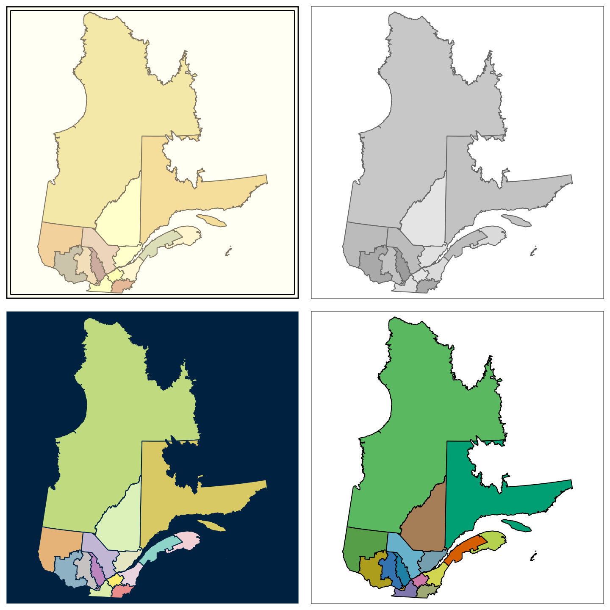
Styles prédéfinis
Fonction tm_style()
La librarie tmap contient des styles prédéfinis qu’on appelle avec la fonction tm_style et qui permettent de ne pas avoir à définir individuellement des arguments de la fonction tm_layout.
Voici quelques uns de ces styles prédéfinis.
tm_shape(Q) + tm_polygons(col="NUM_REG") +
tm_style("classic") +
tm_layout(legend.show = FALSE)
tm_shape(Q) + tm_polygons(col="NUM_REG") +
tm_style("bw") +
tm_layout(legend.show = FALSE)
tm_shape(Q) + tm_polygons(col="NUM_REG") +
tm_style("cobalt") +
tm_layout(legend.show = FALSE)
tm_shape(Q) + tm_polygons(col="NUM_REG") +
tm_style("col_blind") +
tm_layout(legend.show = FALSE) 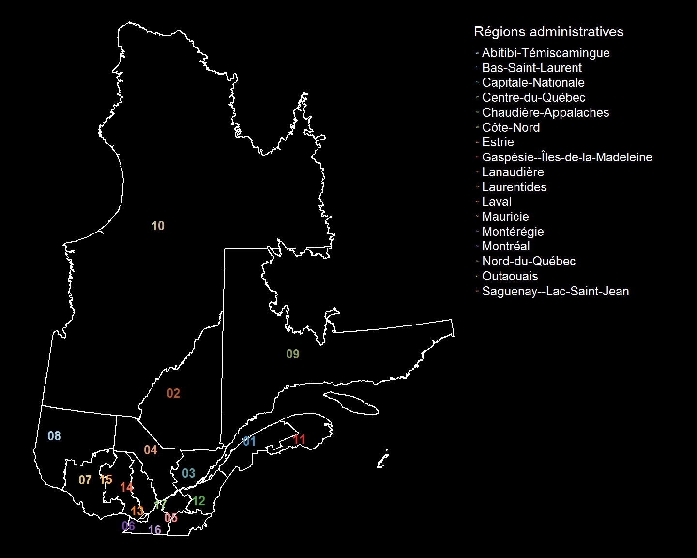
Vous remarquerez que le style col_blind utilise une palette de couleur permettant aux personnes daltoniennes de pouvoir différencier les polygones de couleurs différentes.
6.1.7 Écriture sur une carte
Fonction tm_text()
La fonction tm_text() permet d’écrire sur chaque polygone la valeur d’un de ses attributs.
Par exemple, nous pouvons ajouter le numéro de la région administrative sur chaque polygone:
tm_shape(Q) + tm_polygons(col="NUM_REG") +
tm_style("col_blind") +
tm_layout(legend.show = FALSE, frame = FALSE)+
tm_text("NUM_REG", size = 0.6, fontface="bold")
Ou encore:
tm_shape(Q) + tm_polygons() +
tm_layout(aes.color = c(fill="black",borders="white"),
bg.color = "black",
frame = FALSE,
legend.bg.color = TRUE,
legend.outside = TRUE,
legend.text.size = 0.8,
legend.text.color = "white",
legend.title.color = "white") +
tm_text("NUM_REG", col= "NOM_REG",
palette = "Paired",
size = 0.8, fontface="bold",
legend.col.show = TRUE,
title.col = "Régions administratives",
auto.placement=TRUE,
just="right")
6.1.8 Les lignes
Données sur le réseau routier du Québec
Pour explorer les options d’affichage de données vectorielles de types ligne et multiligne, nous utilisons le shapefile du réseau des routes du Québec. Chargeons ces données dans notre session de travail R avec la fonction st_read():
Ro <- st_read("Module6/Module6_donnees/Routes/QC_routes.shp")Reading layer `QC_routes' from data source
`E:\ELF\Dropbox\Teluq\Enseignement\Cours\SCI1031\Developpement\Structure_test\sci1031\Module6\Module6_donnees\Routes\QC_routes.shp'
using driver `ESRI Shapefile'
Simple feature collection with 223 features and 2 fields
Geometry type: MULTILINESTRING
Dimension: XY
Bounding box: xmin: -822900 ymin: 118000 xmax: 526000 ymax: 983200
Projected CRS: NAD83 / Quebec LambertObserver la structure et les attributs du shapefile Ro. Celui-ci contient 223 multilignes et 2 attributs autres que la géométrie:
NoRte: le numéro de la route,ClsRte: la classe de la route.
En particulier, il existe trois classes possibles de route:
Ro$ClsRte <- as.factor(Ro$ClsRte)
levels(Ro$ClsRte)[1] "Autoroute" "Nationale" "Régionale"Fonction tm_lines()
La bibliothèque tmap possède une fonction particulière pour illustrer des objects vectoriels de type ligne et multigne. Il s’agit de la fonction tm_lines(). Celle-ci doit être ajouter à la fonction tm_shape(L) où L est un shapefile contenant des objets de géométrie ligne ou multiligne.
Illustrons les multilignes du shapefile Ro:
tm_shape(Ro) + tm_lines()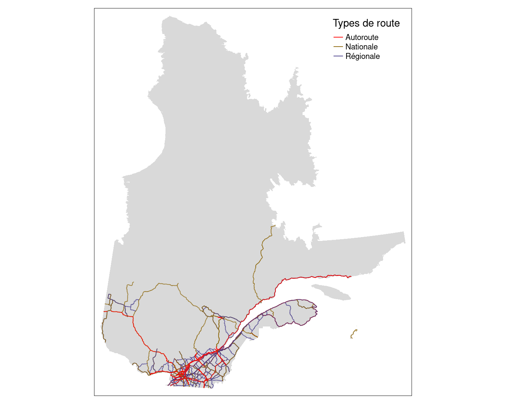
Pour superposer la carte des routes sur la carte du Québec, nous utilisons la propriété additive des objets tmap.
tm_shape(Q) + tm_fill() +
tm_shape(Ro) + tm_lines(col="brown") +
tm_layout(title = "Réseau routier")
Notez que chaque fois qu’on ajoute un nouvel ensemble de données à cartographier en utilisant tm_shape(nouvelles_donnees), les fonctions tm_fonctions() qui suivent s’appliquent à ces nouvelles données et non aux données antérieures.
Pour représenter différemment les objets de type ligne en fonction de la valeur d’un de leur attribut, nous pouvons utiliser l’argument col dans la fonction tm_lines:
# créons une palette de trois couleurs
pal.col<-c("red","darkgoldenrod4","darkslateblue")
tm_shape(Q) +
tm_fill() +
tm_shape(Ro) +
tm_lines(col = "ClsRte",
palette = pal.col,
title.col = "Types de route")
6.1.9 Les points
Coordonnées des municipalités du Québec
Pour explorer les options d’affichage de données vectorielles de types point et multipoint, nous utilisons le shapefile des coordonnées géographiques de quelques municipalités du Québec. Chargeons ces données dans notre session de travail R avec la fonction st_read():
V <- st_read("Module6/Module6_donnees/Villes/QC_coord_municipalites.shp")Reading layer `QC_coord_municipalites' from data source `E:\ELF\Dropbox\Teluq\Enseignement\Cours\SCI1031\Developpement\Structure_test\sci1031\Module6\Module6_donnees\Villes\QC_coord_municipalites.shp'
using driver `ESRI Shapefile'
Simple feature collection with 15 features and 1 field
Geometry type: POINT
Dimension: XY
Bounding box: xmin: -78.91 ymin: 45.41 xmax: -64.47 ymax: 62.41
Geodetic CRS: NAD83Ce shapefile compte 15 objets de type point et un seul attribut (Mncplts) correspondant au nom de la municipalité qui lui est associée.
La bibliothèque tmap comprend plusieurs fonctions permettant de représenter des données de type point. Familiarisons-nous d’abord avec les fonctions tm_dots() et tm_markers(). Nous verrons plus loin les fonctions tm_bubbles() et tm_symbols().
Fonction tm_dots()
La fonction tm_dots() fonctionne de façon similaire aux fonctions tm_polygons() et tm_lines(). Il suffit de l’ajouté à la fonction tm_shape(P) où P est un shapefile de types point ou multipoint.
# Juste les points
Q1 <- tm_shape(V) + tm_dots()
# Les points et la carte du QC
Q2 <- tm_shape(Q) + tm_fill(col = "blue", alpha = 0.4) +
tm_shape(V) + tm_dots(col = "darkblue", size = 1)
#
tmap_arrange(Q1,Q2)
Nous pouvons également définir la couleur des points en fonction de la valeur de leur attribut.
tm_shape(Q) + tm_fill() +
tm_shape(V) + tm_dots(col = "Mncplts",
palette = "Paired",
size = 1) +
tm_layout(frame = FALSE,
legend.outside = TRUE,
title = "Municipalités",
legend.title.color = NA,
legend.text.size = 0.8)
Fonction tm_markers()
La fonction tm_markers() représente les points par le symbole de repère géographique:
tm_shape(Q) + tm_fill() +
tm_shape(V) + tm_markers(size = 0.5,
text = "Mncplts",
text.size = 0.8,
text.just = "top") +
tm_layout(inner.margins = c(0.1,0.2,0.1,0.2))
La fonction tm_markers() permet d’ajouter du texte facilement sur les repères et contient des arguments similaires à la fonction tm_text().
6.1.10 Données matricielles
Données d’élévation du Québec
Pour explorer les options d’affichage de données matricielles, nous utilisons un raster représentant le relief du territoire québecois sous forme d’une matrice d’élévation. Chargeons ces données dans notre session de travail R avec la fonction raster(). Nous devons prélablement charger la bibliothèque raster:
library(raster)
E <- raster("Module6/Module6_donnees/Elevation/QC_Elevation.tif")Le raster E est une matrice de 810612 cellules, et chacune de ces cellules a une résolution d’environ 2 km par 2 km. La valeur maximale d’élévation est de 1592 m.
Fonction tm_raster()
La fonction tm_raster() de la bibliothèque tmap permet de visualiser les rasters en assignant des couleurs différentes pour des classes de valeurs différentes. L’argument n sert à préciser le nombre approximatif de classes à utiliser.
tm_shape(E) + tm_raster(title = "Élévation (m)")
tm_shape(E) + tm_raster(n = 10, title = "Élévation (m)")
Il est possible d’afficher en légende un histogramme illustrant la distribution des valeurs. Par exemple:
tm_shape(E) + tm_raster(n = 10,
title = "Élévation (m)",
legend.hist = TRUE) +
tm_legend(outside = TRUE,
hist.width = 4)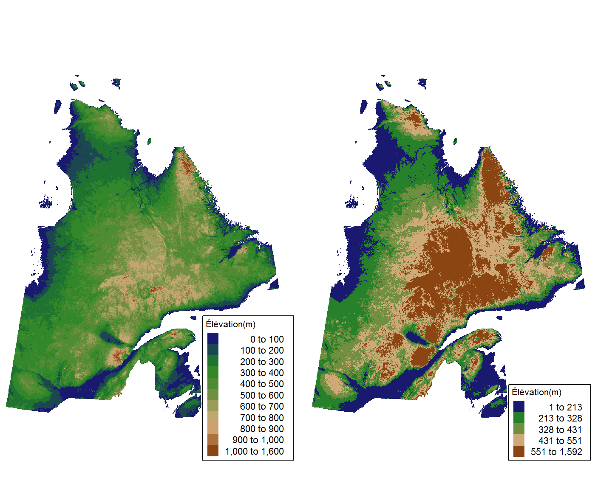
Par défaut, la palette de couleur utilisée est la palette séquentielle YlOrBr de ColorBrewer (de jaune à brun en passant par orange). Or, nous pouvons changer la palette de couleur. Utilisons, par exemple, la fonction colorRampPalette() pour créer notre propre palette de couleur.
pal.elevation = colorRampPalette( c("midnightblue","forestgreen",
"darkolivegreen4","burlywood",
"chocolate4"))
tm_shape(E) + tm_raster(n = 10,
title = "Élévation",
palette = pal.elevation(10),
legend.hist = TRUE,
colorNA = "beige" ) +
tm_legend(outside = TRUE, hist.width = 3)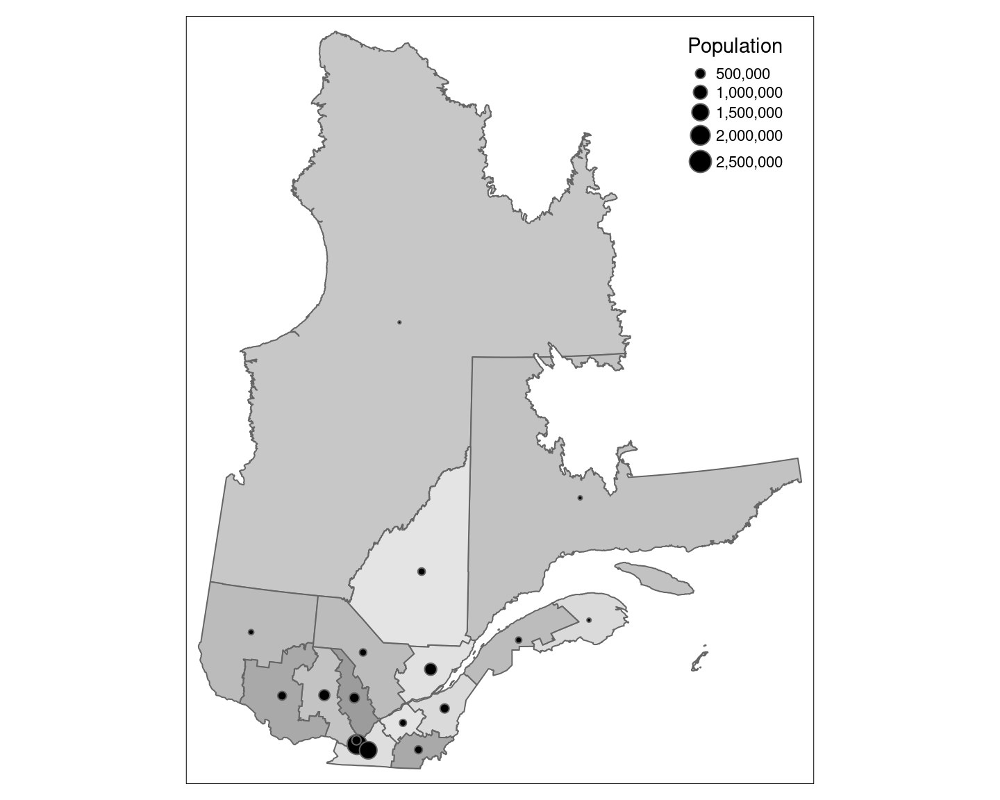
Il existe différentes façons de former des classes de valeur à partir de la distribution. L’argument style de la fonction tm_raster() permet de choisir une méthode parmi plusieurs dont les suivantes:
"fixed": crée des classes de valeurs selon notre propre choix. Ces classes doivent être définies dans un vecteur assigné à l’argumentbreaks."equal": divise les valeurs ennclasses. Ceci est la méthode par défaut."pretty": choisi automatiquement le nombre de classes qui permet de distinguer les valeurs dans un rendu esthétique."quantile": divise les valeurs en quantiles."jenks": utilise l’algorithme de Jenks pour déterminer le nombre optimal de classes.
Visualisons à nouveau la carte des données d’élévation en utilisant un style “fixed” et un style “quantile”:
# définir la mise en page pour les deux cartes
format_carte <- tm_layout(frame = FALSE,
legend.position = c(0.67,0.04),
legend.title.size = 0.8,
legend.format=c(text.align="right"),
legend.bg.color = "white",
legend.frame = "black")
# style fixed.
Efixed <- tm_shape(E) +
tm_raster(title = "Élévation(m)",
palette = pal.elevation(10),
style = "fixed",
breaks = c(0,100,200,300,400,500,600,700,800,900,1000,1600)) +
format_carte
# style quantile
Equant <- tm_shape(E) +
tm_raster(title = "Élévation(m)",
palette=pal.elevation(10),
style="quantile") +
format_carte
tmap_arrange(Efixed,Equant)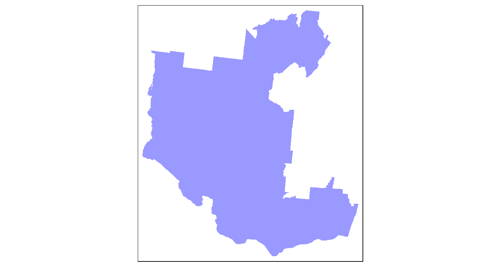
6.1.11 Carte avec symboles proportionnels
Dans des cartes thématiques, il est souvent utile de représentées certains attributs par des symboles proportionnels. Les fonctions tm_symbols() et tm_bubbles() de la bibliothèque tmap sont utiles pour réaliser ce type de cartes.
Fonction tm_symbols()
La fonction tm_symbols() est similaire à la fonction tm_dots() mais ne s’utilise pas nécessairement avec des données vectorielles de type points. En particulier, elle permet de représenter la valeur d’attribut d’un polygone en affichant un symbole dont la taille ou la couleur est proportionnelle à cette valeur.
En guise d’exemple, reprenons les données sur les régions administratives du Québec pour lesquelles nous connaissons la taille de la population. Nous pouvons illustrer les régions par un cercle dont le diamètre est proportionnel à la taille de sa population. Il s’agit d’attribuer à l’argument size, le nom de l’attribut que nous souhaitons représenter.
tm_shape(Q) +
tm_polygons(col="NUM_REG", legend.show = FALSE) +
tm_style("bw") +
tm_symbols(col = "black",
size = "Pop_tot",
legend.size.show = TRUE,
legend.size.is.portrait = TRUE,
title.size = "Population")
Par défaut, le symbole utilisé est un point. Le point correspond au symbole shape = 21. Nous pouvons toutefois utiliser d’autres symboles comme le carré (shape = 15), ou le repère géographique (shape = marker_icon()). Vous pouvez même importer vos propres symboles.
carte_base <- tm_shape(Q) +
tm_polygons(col="NUM_REG", legend.show = FALSE) +
tm_style("bw")
carte_carre <- carte_base +
tm_symbols(shape = 15,
col = "red",
size = "Pop_tot",
legend.size.show = TRUE,
legend.size.is.portrait = TRUE,
title.size = "Population")
carte_marqueur <- carte_base +
tm_symbols(shape = marker_icon(),
border.col = NULL,
size = "Pop_tot",
legend.size.show = TRUE,
legend.size.is.portrait = TRUE,
title.size = "Population")
tmap_arrange(carte_carre, carte_marqueur)
Représenter deux légendes
Lorsque nous utilisons des symboles proportionnels, nous devons souvent avoir plus d’une légende. Par exemple, dans les cartes précédentes, nous avions seulement une légende se rapportant à la taille des populations mais aucune légende pour identifier les régions. Pour ajouter deux légendes (ou plus), nous devons utiliser la fonction tm_layout() avec l’argument legend.stack qui précise si les légendes seront disposées de façon verticale ou horizontale.
tm_shape(Q) +
tm_polygons(col="NOM_REG",
palette="Set1",
border.col = "darkgrey",
title ="Régions administratives") +
tm_symbols(size = "Pop_tot",
border.col = "grey",
col="black",
scale = 2,
legend.size.show = TRUE,
legend.size.is.portrait = FALSE,
sizes.legend.labels = c("500","1000","1500","2000","2500"),
title.size ="Population (en milliers)") +
tm_layout(frame = FALSE,
legend.outside = TRUE,
legend.stack = "vertical",
legend.title.fontface = "bold" ) 
Fonction tm_bubbles()
La fonction tm_bubbles() est similaire à la fonction tm_symbols() et s’utilise lorsqu’on souhaite seulement représenter des symboles sous forme de cercle/point. Cette fonction est pratique lorsque nous voulons représenter deux attributs avec un symbole: le premier attribut est représenté par la taille du cercle et le second attribut par sa couleur.
Utilisons à nouveau les données sur la taille des populations des régions administratives. Par exemple, représentons chaque région par un cercle dont le diamètre est proportionnel à la taille totale de sa population (comme nous l’avons fait plus haut). De plus, colorons chaque cercle en fonction de la proportion d’enfants (individus agés entre 0 et 14 ans) dans sa population.
Tout d’abord, nous devons calculer la proportion d’enfants dans chaque région. Pour le moment, nous connaissons seulement le nombre d’enfants (A0.14_T). Créons un nouvel attribut pour le shapefile Q:
Q$Pop_prop_enfant <- Q$Pop_0_14/Q$Pop_totUtilisons maintenant la fonction tm_bubbles() en définissant l’argument size par l’attribut "ATot_T", et l’argument col par l’attribut "Pop_prop_enfant":
tm_shape(Q) +
tm_polygons(col = "NUM_REG",
legend.show = FALSE,
palette = "Greys") +
tm_bubbles(size = "Pop_tot" ,
col = "Pop_prop_enfant",
style = "quantile",
scale = 2,
border.col = "black",
border.lwd = .5,
legend.size.show = TRUE,
legend.size.is.portrait = FALSE,
title.size ="Population (en milliers)",
title.col = "Proportion d'enfants (0-14 ans)",
sizes.legend.labels = c("500","1000","1500","2000","2500"))+
tm_layout(frame = FALSE,
legend.outside = TRUE,
legend.title.size = 1)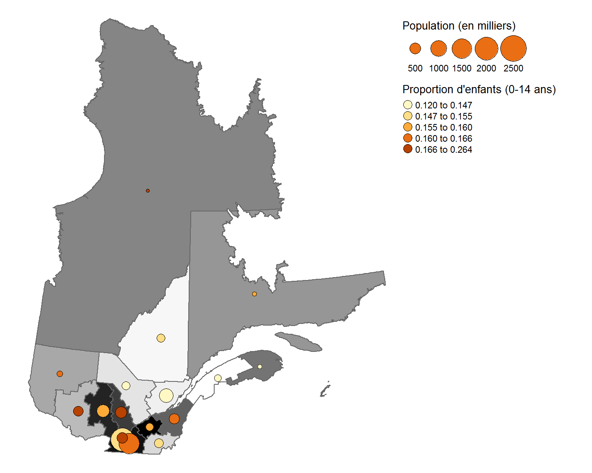
L’argument style est utilisé pour définir les classes de couleurs. Ici, nous avons choisi une classification en quantile. Noter que nous pouvons définir un titre pour la légende des tailles (title.size) et un titre pour la légende des couleurs (title.col).
Remarquer que cette figure nous permet d’observer que la proportion d’enfants au Nunavik est très grande malgré que la taille de la population soit petite.
6.1.12 Cartes Choroplèthes
Les cartes choroplèthes sont utilisées pour représenter des données vectorielles de type polygone en assignant une couleur à chaque polygone en fonction de la valeur d’un de ces attributs.
Pour créer des cartes choroplèthes, nous utilisons l’argument col de la fonction tm_polygons(). L’assignation des couleurs se fait de la même façon que pour tm_raster() et tm_bubbles() en définissant des classes de valeur d’attribut.
Créons des cartes choroplèthes de la proportion d’enfants dans les régions administratives en utilisant différentes classifications de couleurs.
# Par defaut, nous avons 4 classes
Qdefaut <- tm_shape(Q) + tm_polygons(col = "Pop_prop_enfant")
# style fixed.
Qfixed <- tm_shape(Q) + tm_polygons(col = "Pop_prop_enfant",
style = "fixed",
breaks = c(0.1, 0.14, 0.15, 0.16, 0.18, 0.3))
# style quantile
Qquant = tm_shape(Q) + tm_polygons(col = "Pop_prop_enfant",
style = "quantile")
tmap_arrange(Qdefaut,Qfixed,Qquant)Legend labels were too wide. The labels have been resized to 0.6, 0.6, 0.6, 0.6, 0.6. Increase legend.width (argument of tm_layout) to make the legend wider and therefore the labels larger.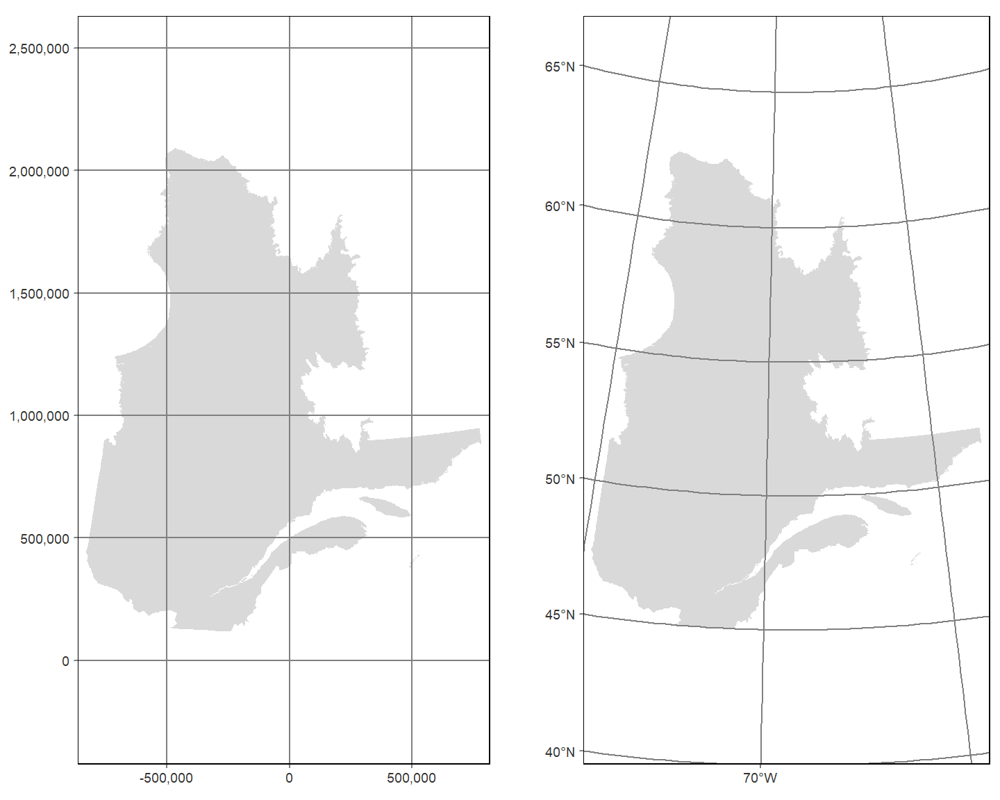
6.1.13 Cartes à panneaux multiples
Fonction tm_facets()
Il est parfois utile illustrer des polygones côte-à-côte afin de faciliter la comparaison d’un de leurs attributs. On appelle les cartes des polygones individuellement représentés des panneaux.
Pour créer une carte à panneaux multiples, nous utilisons d’abord la fonction tm_polygons() pour représenter chaque polygone selon la méthode de notre choix (par exemple selon une représentation choroplèthe d’un des attributs). Ensuite, nous ajoutons la fonction tm_facets() pour préciser la disposition des panneaux (arguments nrow ou ncol) ainsi que l’attribut utilisé (la facette) pour distinguer chaque panneau (argument by).
Représentons à nouveau les polygones des régions administratives selon la proportion d’enfants dans leur population mais cette fois en créant une carte à panneaux multiples:
tm_shape(Q) + tm_polygons(col = "Pop_prop_enfant",
style = "quantile") +
tm_facets(by = "NOM_REG",
nrow = 5,
scale.factor = 5) +
tm_layout(panel.label.height = 2,
panel.label.size = 0.9,
legend.show = FALSE)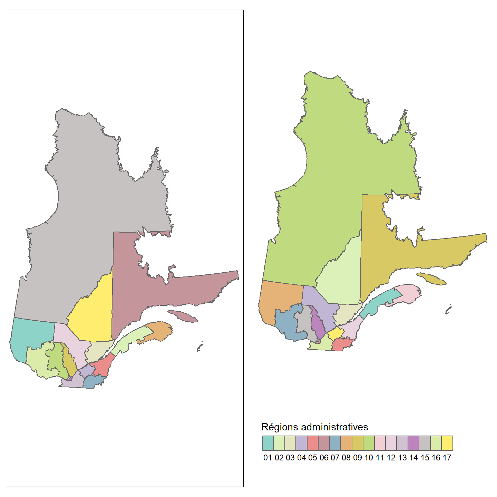
L’argument scale.factor détermine la mise à l’échelle du texte par rapport à la mise à l’échelle des polygones. Les polygones ont été réduits de taille pour entrer dans leur panneau, toutefois nous souhaitons que le titre apparaissant dans la partie supérieure du panneau ne soit pas réduit autant.
Il est possible de modifier la police du texte, sa couleur, la couleur de fond des panneaux, le cadre des panneaux, et plus, en utilisant les arguments de la fonction tm_layout().
6.1.14 Cartes avec encadré
Il est parfois nécessaire d’accompagner une carte par une autre carte de taille moindre circonscrite dans un encadré sur ou en marge de la carte principale. Ceci est le cas, par exemple, lorsque nous souhaitons préciser la localisation de la carte principale dans une région plus grande.
Bibliothèque grid
Pour réaliser une carte avec un encadré, nous devons utiliser la bibliothèque grid. Commençons par installer cette bibliothèque:
install.packages("grid")En guise d’exemple, considérons une section du raster d’élévation E correspondant à la région de l’Outaouais. Vous n’avez pas besoin de comprendre les opérations ci-dessous car nous les apprendrons dans les modules 7 et 8.
# Isoler le polygone de l'Outaouais
Q_Outaouais <- subset(Q, NOM_REG == "Outaouais")
# Découper le raster E selon l'étendue de Q_Outaouais
E_Outaouais <- crop(E, extent(Q_Outaouais))
# Créer un mask
E_Outaouais <- mask(E_Outaouais, Q_Outaouais)Créons d’abord une carte des données d’élévation pour la région de l’Outaouais. Cette carte consituera notre carte principale.
# Définir la carte principale
carte_princ <- tm_shape(E_Outaouais) +
tm_raster(title = "Élévation (m)",
palette = pal.elevation(5)) +
tm_scale_bar(position = c("left","bottom"),
text.size = 0.6)
# Mise en page de la carte
format_carte <- tm_layout(frame = FALSE,
legend.outside = TRUE,
legend.outside.position = "right",
legend.title.size = 0.8,
legend.bg.color = "white",
legend.frame = "black")Créons maintenant une carte du Québec qui délimite la région de l’Outaouais par des frontières de couleur rouge. Cette carte sera l’encadré à insérer sur la carte principale.
# Définir la carte encadré
carte_cadre <- tm_shape(Q) +
tm_borders(col = "black") +
tm_shape(Q_Outaouais) +
tm_borders(lw=2, col="red")Nous pouvons enfin combiner les deux cartes ensembles. Il s’agit d’afficher la carte principale et d’ajouter la carte encadré en utilisant la fonction print().
En particulier, nous utilisons la fonction viewport() de la bibliothèque grid qui permet de définir la position de la carte encadré sur la carte ainsi que sa taille.
library(grid)
carte_princ + format_carte
print(carte_cadre, vp = viewport(0.72, 0.42, width = 0.4, height = 0.4))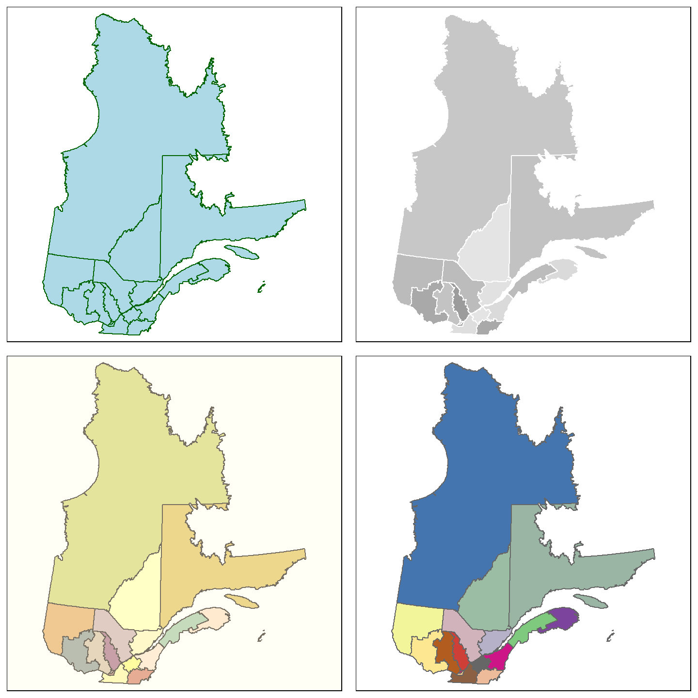
Les chiffres (0.72,0.42) correspondent aux coordonnées (x,y) de la position de la carte encadrée sur la carte principale (où (0,0) est le coin inférieur gauche de la carte principale, et (1,1) est le coin supérieur droit).
Les arguments width et height sont des nombres entre 0 et 1. Ceux-ci correspondent au facteur par lequel nous souhaitons réduire la largeur et la hauteur de la carte encadrée.